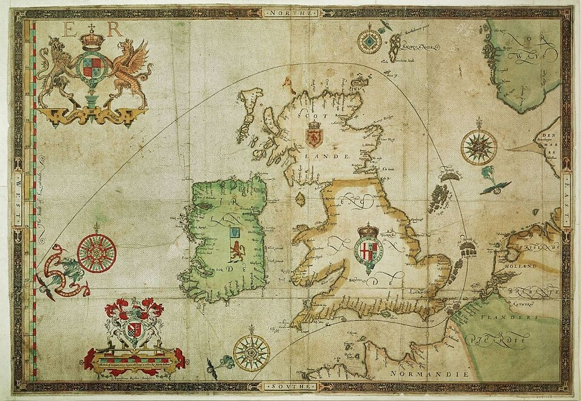

Brulotes, cañones y viento deshacen a la Gran Armada de España frente a Gravelinas
La flota que Felipe II envió contra Inglaterra, y que los suyos llamaban la felicísima, huye hacia el norte tras una jornada de fuego frente a la costa de Flandes. Ciento treinta naves para invadir una isla, y el viento vota por la isla.

La gran flota de España, que durante una semana remontó el Canal en forma de media luna sin que nadie lograra romperla, es desde hoy un rebaño disperso que corre hacia el mar del Norte. Anoche, frente a Calais, los ingleses soltaron contra ella ocho naves viejas convertidas en teas ardientes, y los capitanes españoles, por esquivar el fuego, cortaron los cables, perdieron sus anclas y deshicieron su formación. Hoy, frente a Gravelinas, los galeones de la reina los cañonearon durante horas desde tan cerca que hasta los mosquetes tomaron parte, sin dejarse abordar jamás, que era todo el juego de los de España. Al caer la tarde, el viento hacía el resto y empujaba a la Armada lejos de Flandes.
La empresa venía preparándose desde hace años y no era secreto en corte alguna: el rey católico, señor de dos mundos, quería acabar con la reina que ampara a los rebeldes de Holanda, suelta a sus corsarios contra las flotas de las Indias y mandó cortar la cabeza a María Estuardo, reina de Escocia. El plan era juntar la Armada con los tercios del duque de Parma, que aguardan en Flandes con sus barcazas, y echar sobre Inglaterra al mejor ejército del mundo. Pero los navíos ligeros de los holandeses cierran los bancos de arena, Parma no pudo salir al encuentro, y una flota que no puede desembarcar su ejército es un castillo que pasea.
Al mando va el duque de Medina Sidonia, gran señor de Andalucía que heredó el cargo por muerte del marqués de Santa Cruz, y del que se murmura que escribió al rey excusándose, alegando que se marea en el mar y que de armadas entiende poco; el rey no admitió la excusa. Desde que asomó frente a Plymouth a fines de julio, la Armada libró escaramuzas en Portland y en la isla de Wight sin romperse, y los marinos ingleses, más veleros y mejor artillados, le mordían los bordes sin poder deshacerla. Fue el ancla de Calais, y no el cañón, lo que la perdió: contra una flota fondeada, ocho brulotes valen por cien galeones.
En esta ciudad, que vivió la semana entre alarmas, milicias y sermones, ya corren las historias de la campaña: que el vicealmirante Drake, cuando le avisaron que la Armada estaba a la vista, habría querido terminar primero su partida de bolos en el monte de Plymouth, que para vencer a España quedaba tiempo. La reina Isabel, se dice en palacio, irá en persona a arengar a sus tropas acampadas en Tilbury, sobre el Támesis, por si Parma cruzara. Y en los púlpitos ya se predica que el viento de estos días es soldado de Dios; los marinos, menos devotos, apuntan que también ayudaron los cañones largos y la pólvora que a los españoles se les iba acabando.
A la Armada le queda por delante un camino atroz: cerrado el Canal por el viento y por la flota inglesa, sus pilotos no tienen otro regreso que rodear Escocia e Irlanda, mares sin cartas ni puertos amigos, con las naves maltrechas, las anclas perdidas en Calais y el agua y la vianda tasadas a la baja. Quede para los años venideros juzgar la jornada entera; este diario deja anotado lo que los marinos ya saben: que hoy se peleó de un modo nuevo, todo cañón y maniobra y nada de abordaje, y que los imperios, por grandes que sean en tierra, se juegan en el mar con madera, hierro y clima.